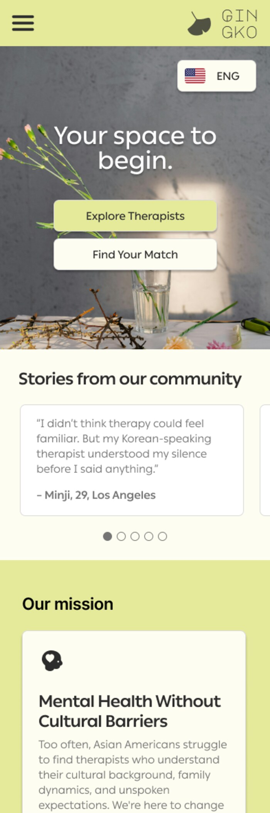
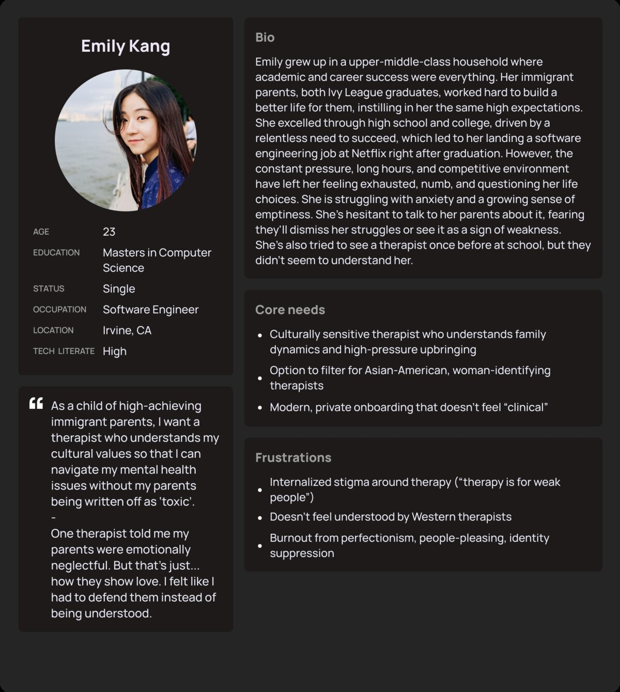
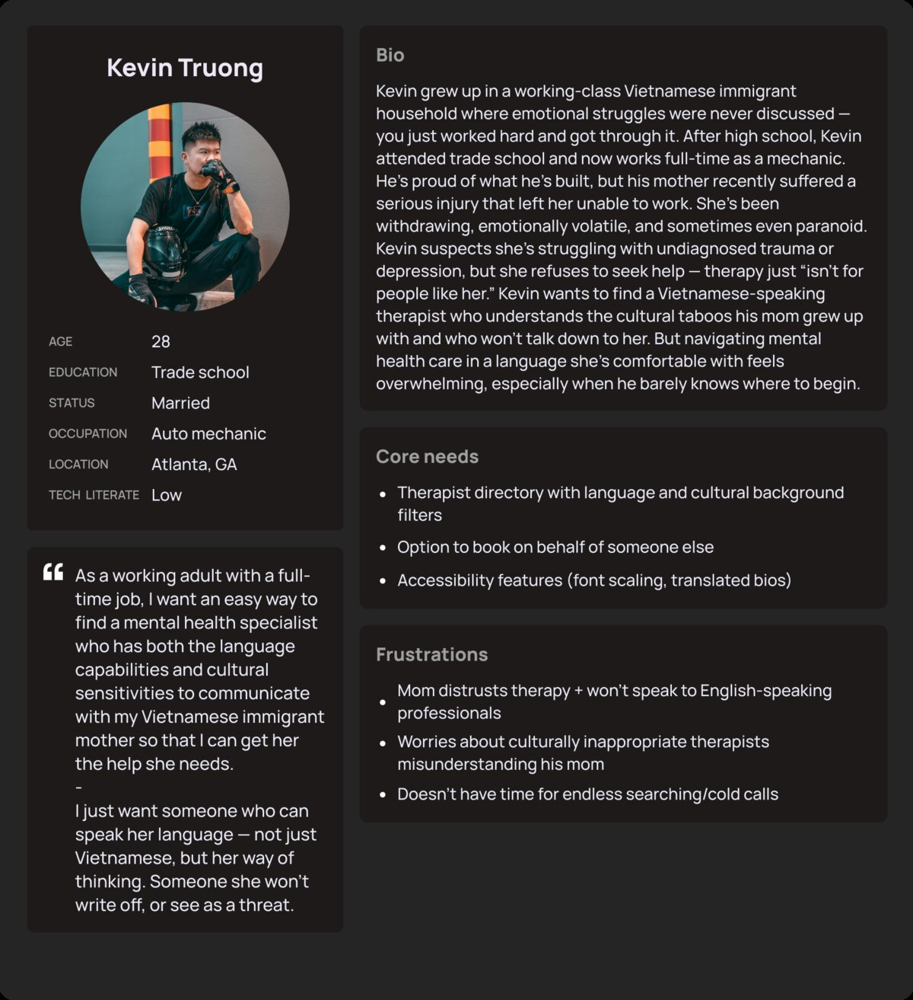
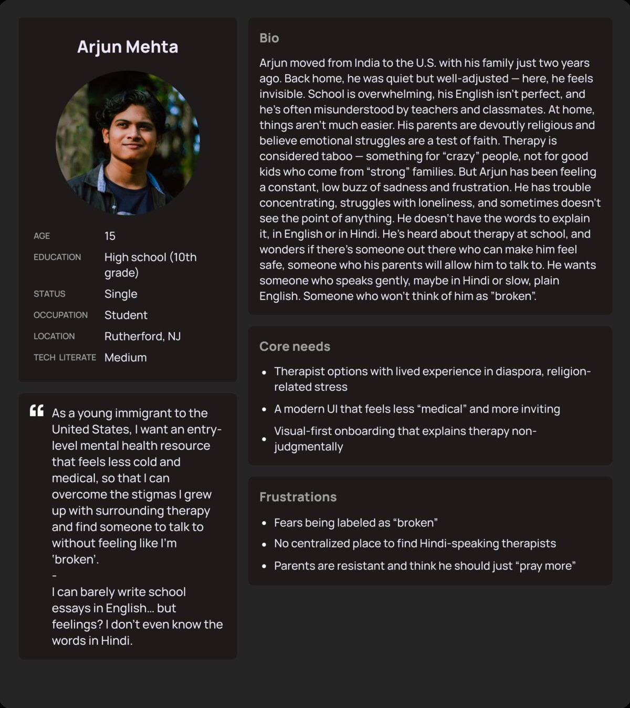
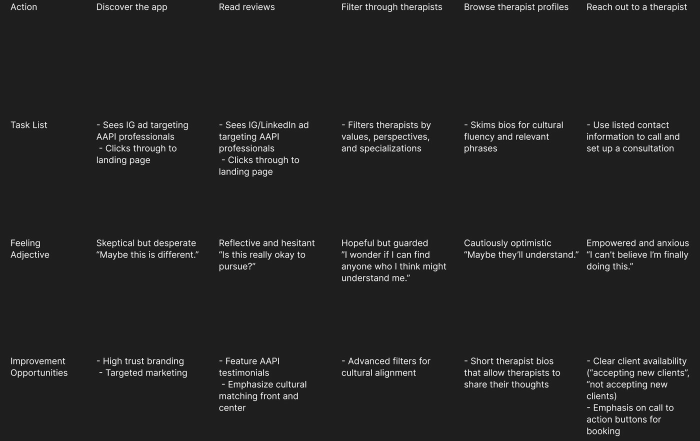
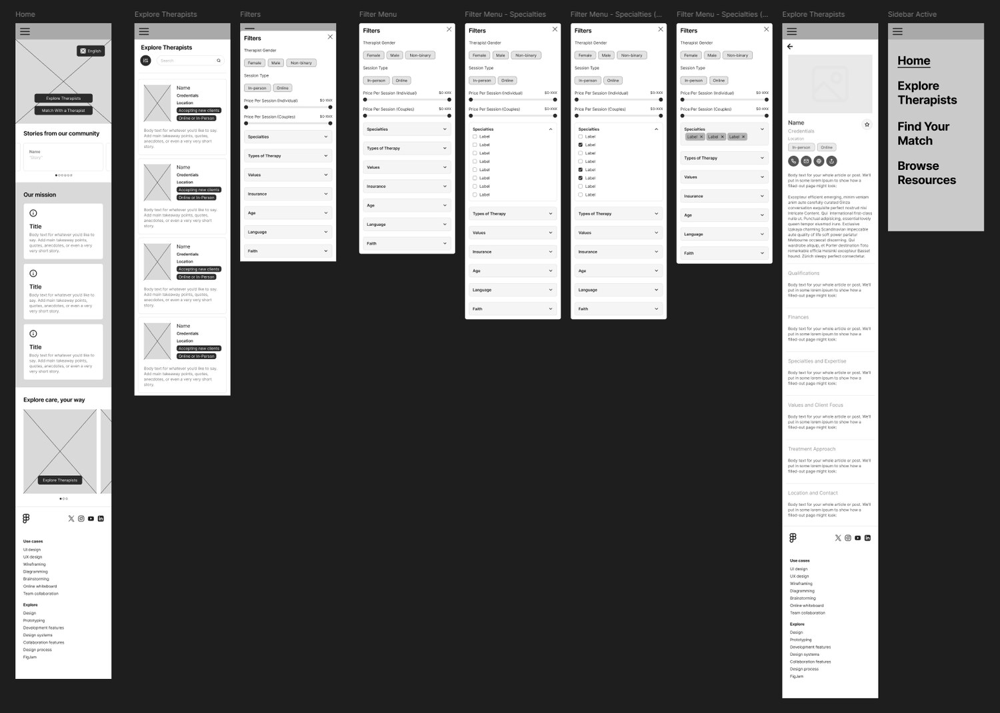
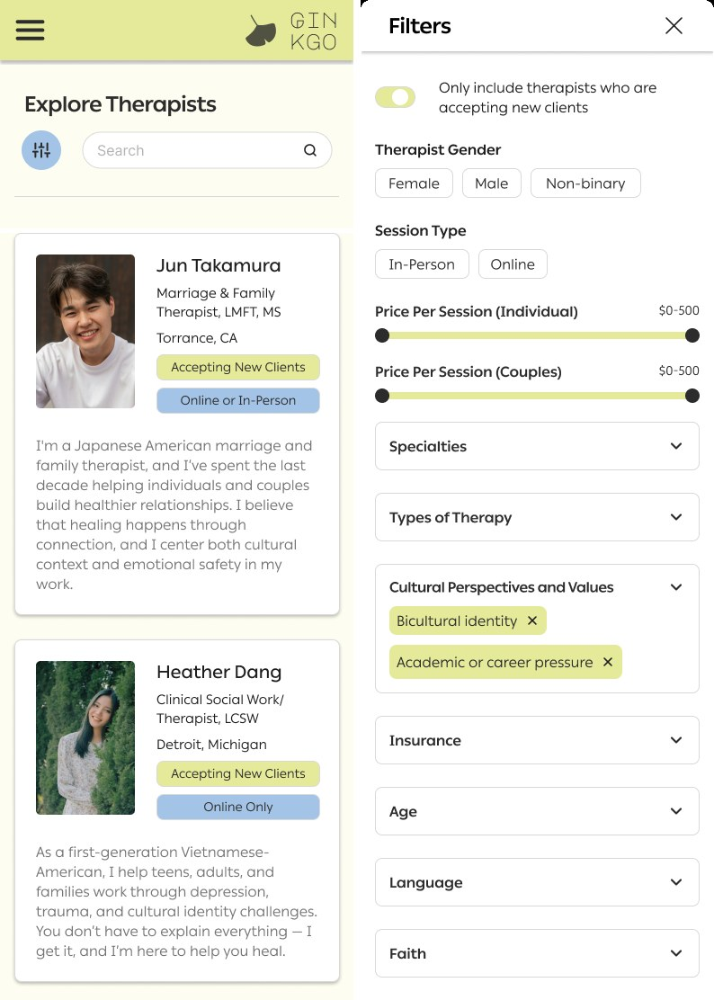
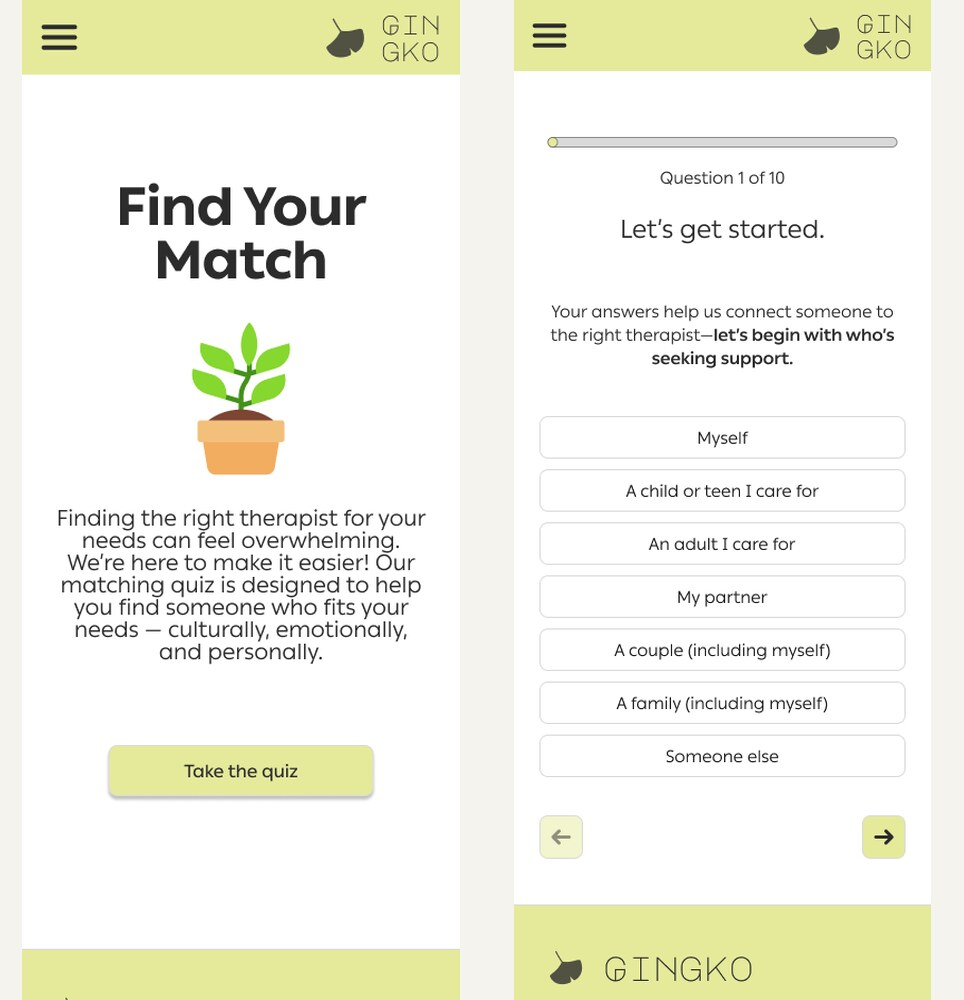
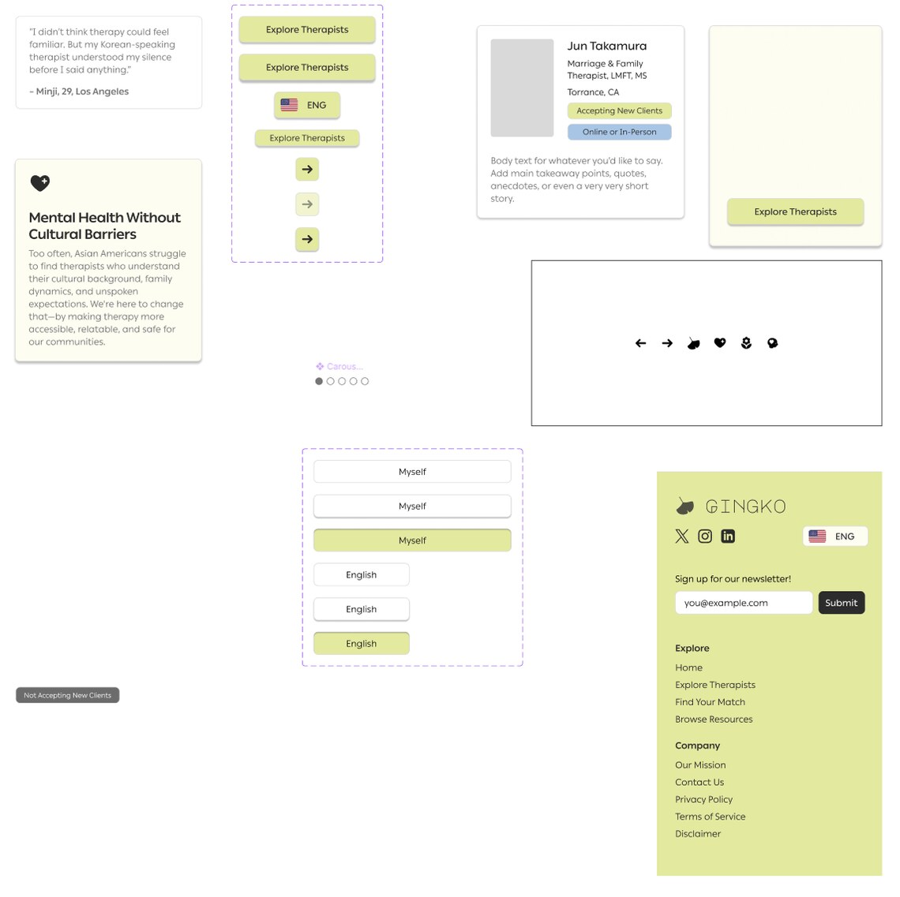

Gingko is a mobile app that helps Asian Americans find therapists who actually get them. It pairs a culturally-aware therapist directory with a "find your match" quiz that recommends providers based on language, cultural values, and therapy style — so instead of scrolling an overwhelming list and hoping, you get pointed somewhere that fits. I designed the whole thing solo, from research and personas all the way to a high-fidelity, clickable Figma prototype.

Context
Finding a therapist is hard for anyone. Finding one who understands your cultural context — not just your symptoms — is a lot harder if you're Asian American. There's stigma, language barriers, a shortage of culturally competent providers, and honestly, not a lot of awareness that better options even exist. So a lot of people just… don't go.
The data made that painfully concrete. Asian Americans are about 6% of the U.S. population, but in 2022 they were only 1.4% of kids and 1.7% of adults who actually received mental health treatment. Only 4.37% of U.S. psychologists identify as Asian — a tiny pool of people likely to understand values like filial piety, emotional restraint, or collectivism without needing them explained first. And around 72.5% of Asian Americans speak a language other than English at home, which matters a lot in something as vulnerable as therapy.
The challenge I set for myself: make it genuinely easier to find a therapist who fits — and do it in a way that lowers the stigma instead of adding to it.
My role
Solo capstone, so… all of it. I owned the full human-centered process: research and data synthesis, the competitive audit, personas and journey maps, the ethical risk work, and prototyping from scrappy wireframes to a polished interactive prototype.
Process
Digging into the research. I pulled together data from national health databases, workforce registries, and census estimates (I leaned on 5-year ACS estimates for the smaller population segments, since they're more reliable) so the whole thing was grounded in evidence and not just my assumptions. Then I audited four platforms already in the space — Psychology Today, the Asian Mental Health Collective directory, Anise Health, and Mental Health Match — to see what existed.
The gap jumped out fast: none of them really let you filter for cultural values, generational experience, or language fluency beyond a basic "speaks X" tag, and they were all English-only. Only Anise Health leaned into cultural relevance at all. That gap — actual cultural fit and emotional safety, designed in on purpose — became the reason Gingko should exist.
Turning that into priorities. Three things fell out of the research and drove every decision after:
- Accessibility & language matching — you should be able to filter by language fluency and cultural background, with multilingual support baked in.
- Trust & cultural relevance — the app should make therapy feel normal within Asian cultural frameworks, instead of translating a western-default clinical tone.
- Simplicity for multilingual audiences — plain language and visual cues so people don't drop off, especially ESL and older users.
The people I was designing for. I built three research-grounded personas so I wasn't secretly designing for one imaginary version of "an Asian American user": Emily, a 23-year-old burnt-out achiever navigating high-achieving-immigrant-family stuff; Kevin, 28, trying to find a therapist who can actually talk to his immigrant mom in her language; and Arjun, a 15-year-old therapy skeptic who needs a way in that doesn't feel cold or clinical. Empathy maps and journey maps followed each of them from "maybe I need help" to "matched," flagging every spot it got emotionally or practically hard.




Designing responsibly (the part I'm proudest of). Because this touches identity, culture, and stigma, I treated the ethical risks as an actual design problem instead of a footnote:
- Not designing from just my own lens — I grounded decisions in research and real community narratives, and spread the personas across age, immigration status, and background so I wasn't overgeneralizing.
- Not reinforcing bias — instead of implying only a same-ethnicity therapist can help, I let people choose values-aligned therapists regardless of race, and added content on what "culturally informed" actually means.
- Accessibility as safety — a plain-language mode, multilingual options, low-stigma wording ("find someone to talk to," not "diagnose your mental illness"), and progressive disclosure so guidance shows up only when it's needed.
Honestly, the hardest calls here were about restraint and respect, not visuals.
Building it. I moved from sketches to low-fi wireframes to a branded high-fidelity prototype in Figma, built around two main flows:
- Explore therapists — a directory with real cultural filters (language, values, therapy style, session type, price) and profiles that lead with cultural strengths.
- Find your match — a short quiz that turns the overwhelming open search into a few questions and hands back therapists that fit.
I went with a ginkgo leaf, a soft sage palette, and copy like "your space to begin" on purpose — I wanted it to feel calm and welcoming, not like filling out a medical form.

The two flows I built out:



Outcome
I delivered a full, clickable high-fidelity prototype that put those three priorities into practice: deep cultural and language filtering, the find-your-match quiz, a multilingual toggle, and a deliberately simple, image-supported UI that keeps things from feeling heavy. I presented it as my capstone for the Grow with Google × Mentor Me Collective cohort.
Where I'd take it next. Stuff I scoped but ran out of time for: account creation and a stronger responsive web version; a rolling pipeline of more cultural filters plus a resource library that stays updated; and a youth "start here" flow for minors — anonymous resources, plain-language minor-consent info by state, and honest explainers of what therapy even is — to build trust before anyone has to commit. Longer term, partnering with existing orgs could extend the whole ecosystem, and the culturally-inclusive framework could adapt for other communities.
Reflection
Designing for something this stigmatized and high-stakes changed what "good UX" even meant to me — tone and language basically became safety features. The words, the framing, deciding when to reveal what: all of that did as much work as any screen. The ethical risk-mapping especially — trying hard not to flatten culture into fixed boxes — pushed me toward flexible, values-based personalization, which is a principle I'll carry into anything that touches identity.
If I'd had more time, the first thing I'd do is usability-test the prototype directly with Asian American users; I scoped it, the timeline just didn't allow it. More than anything, Gingko made it obvious what kind of designer I want to be: one who makes the important stuff actually reach the people who usually get left out.